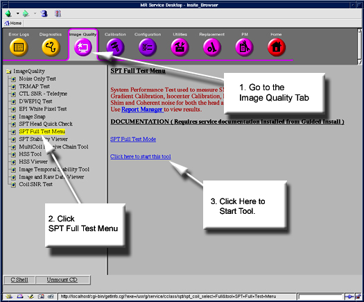
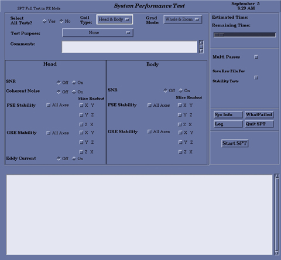

Proprietary to General Electric Company
Direction 5440000, Rev# 5
Signa HDxt Service Methods
Module Version 6.0, Version Date 9/29/10
Proprietary to General Electric Company |
| Required Persons | Preliminary Reqs | Procedure | Finalization |
|---|---|---|---|
| 1 | Not Applicable | 2 hours |
| Item | Qty | Effectivity | Part# | Manufacturer | |
|---|---|---|---|---|---|
| Body TLT Loader with Sphere | 1 | 1.5T | 2125244 | - | |
| Quad Head Coil | 1 | 1.5T | - | ||
| Split Head Coil Assembly | 1 | 1.5T | - | ||
| Split Head Coil Formed Cushion | 1 | 1.5T | - | ||
| DQA Phantom | 1 | 1.5T | - | ||
| Head Loader Positioner | 1 | 1.5T and 3.0T | - | ||
| Body TLT Sphere for 3.0T (Pink Solution) | 1 | 3.0T | - | ||
| Body TLT Loader for 3.0T | 1 | 3.0T | - | ||
| Head TLT Sphere for 1.5 | 1 | 1.5T | - | ||
| Head TLT Loader for 1.5 | 1 | 1.5T | - | ||
| Head TLT Sphere for 3.0T (Pink Solution) | 1 | 3.0T | - | ||
| Head TLT loader for 3.0T | 1 | 3.0T | - | ||
| Quad Head Coil | 1 | 3.0T | - | ||
| Split Head Coil Assembly for G3 | 1 | 3.0T | - | ||
| DQA Phantom with Head Loader 3.0T | 1 | 3.0T | - | ||
| Nesting Plate (if available at Site) | 1 | 3.0T or 1.5T | - | ||
| Foam Wedges or Pads | AR | - | - | - | |
| Condition | Reference | Effectivity |
|---|---|---|
Cancel out of any previous exams. Click on [End Exam]. | - | - |
Remove any patient positioning devices before placing the nesting plate or other phantoms on the table. In particular, remove patient restraints or other devices that attach to the tracks along the edges of the cradle. | - | - |
Disable the TwinSpeed vacuum pump if SPT FSE or FGRE stability scans are going to be run. Failing to disable the vacuum pump may result in SPT stability failures.
Remove the front cover from the TwinSpeed Accessory Cabinet (TAC) , and place the power switch on the right side of the vacuum pump (near the power cord connection) in the <OFF> position. The power cord may also be removed from the pump. (See Illustration 1.)
Illustration 1: Vacuum Pump Inside TwinSpeed Accessory Cabinet

If all tests are to be run, these elements are required:
(For Sites with a Nesting Plate) Nesting Plate
Body Sphere with short loader
Split Head Coil DQA phantom 2321556 for use only with the new split head coil
Head Coil
Head Sphere and Loader
Head Loader Positioner
For upgrade systems with the old Quad Head Coils [Non-Split Top Head Coil], insert the DQA Phantom into the Head Coil. Turn on the alignment light, and move the cradle until the alignment light is centered using the marks on phantom as shown in Illustration 2.
Illustration 2: Quad Head Coil with DQA Phantom

Remove the DQA phantom and replace it with the TLT loader shell and sphere as shown in Illustration 3. Align laser cross-hairs with the loader shell cross-marks.
Illustration 3: DQA Phantom Replaced with TLT Loader Shell

For forward production systems with a split-top head coil as shown in Illustration 4, place the TLT sphere, loader shell and positioner into the split top head coil. Align the laser cross-hairs with the Loader shell cross-marks.
Illustration 4: Split Top Head Coil with TLT Sphere Loader Shell and Positioner

Establish the landmark, but do not advance to scan at this point.
(For Sites with a Nesting Plate Only) Place the nesting plate on the patient table so that it butts flush against the positioner of the head coil.
| NOTE: | Phantoms with pink solution are used only for 3.0T. |
If using the split top head coil on an older Signa table, do not try to align the coil to the double notches on the old style table. The split top head coil needs to be positioned in a superior location on the table (as close as possible to the LPCA). Failure to correctly position the head coil will result in SPT failures due to inability to use full travel distance.
For software versions at 14.x and beyond ONLY – If phantom positioning is an issue, it will be flagged during the “Phantom Check” at the beginning of the SPT scan.
For all software versions prior to 14.x, user should verify the ability to travel from the landmark on the head coil to the crosshairs on the body loader prior to starting SPT. (See Illustration 5.)
Illustration 5: Position Split Top Head Coil In A Superior Location On Old Signa Table

Place the short loader with the body sphere inside on the nesting plate as shown in Illustration 6. Note the position of the short loader. (The label on the top of the short loader indicates the correct orientation.)
Illustration 6: Short Body Loader with Body Sphere Positioned on Nesting Plate

Landmark on the axial line of the Head TLT Loader in the head coil.
As a final positioning check, ensure that:
The head coil is all the way in position.
The TLT Phantom is all the way in the loader.
The nesting plate is up against the head loader positioner (head loader positioner is only used with split-top head coil).
Properly position the Head Sphere and Loader as previously noted.
Establish landmark on the center line of the Head Loader, but do not Advance to Scan.
Run the cradle in so the display reads 1135 mm. (See illustration below.)
Illustration 7: Distance between Head Loader Landmark and Center Mark on Body Loader

Turn on the alignment light and then position the body loader on the cradle so that the alignment light is properly centered on the loader crosshair. Place wedges on both sides of the body loader to prevent movement.
As a final positioning check, ensure that:
The head coil is in position.
The TLT Phantom is all the way in the head coil.
Press [Advance to Scan].
| ||||
| Test functionality and system functionality may be adversely affected if the previous exam is not terminated. Click on [End Exam] to terminate any previous exam. It is not necessary to click on [New Pt] as SPT automatically enters the scan protocol when it is invoked via CSD. | ||||
To start the SPT Full Test tool from the Service Browser, follow the steps in Illustration 8.
Illustration 8: Starting the SPT Test Tool

The Field Engineer should always use the Full Test Mode.
Once the link: Click here to start this tool is clicked, the SPT Head Coil Selection screen displays. (See Illustration 9.)
Illustration 9: Select Head Coil for SPT Screen

| NOTE: | The coil choice is only available for 1.5T systems. For the 3.0T, there is only one coil available as given in the system tool. The user must go directly to Step 3. |
Select the head coil currently in use, then click on [Start]. (See Illustration 10.) An SPT Test menu displays in a window on the desktop.
| NOTE: | With release 15.x, Shim is not an option and will not appear in the SPT GUI. |
In the Select All tests field, click [No].
To select a reason for the test, click the button to the right of Test Purpose. Select a reason from the list. If desired, enter text in the Comments field.
For systems with a CRM Body Coil, select Shimming [Off] in the Body section.
Click the [On] button to select the desired test to run.
For TwinSpeed, select the GradMode(s) to be used while running the tests.
To select multiple passes of the test(s), select the [Multi Passes] button, then enter the desired number of passes in the box that appears to the right.
Click [Start SPT] to begin.
Prompts may require making additional selections as the test begins.
Status messages will display in the text box below the menu as the tests are run. Use the scroll bar on the right side of the box to move up or down through the messages.
| NOTE: | Beginning with 14.0 software, SPT will begin by performing a phantom check. The phantom check will verify that the correct phantoms are being used and in the correct locations. For information on how to view the results from the Phantom Check, refer to Viewing Results and Calibration Files. |
If desired, click the [WhatFailed] button. An example of WhatFailed output can be found in Troubleshooting.
| NOTE: | Illustration 9 will displayed until SPT is exited. If in a troubleshooting mode, press the [Start SPT] button to start again. |
Illustration 10: Field Engineer Test Selection - Full Test Example

To exit SPT, click the [Quit SPT] button.
TwinSpeed ONLY: When finished with SPT, place the power switch on the vacuum pump back into the ON position. If power cord was disconnected, reconnect it at this time. Replace the cover onto the front of the TAC.
To view SPT results, select the Utilities tab on the Service Browser, then select [Report Manager].
Enter the Report Manager password (the same password used for the Service Methods CD-ROM) and press [Enter].
Perform a TPS Reset after completing SPT to put the system back into a known state.
If for any reason a SPT scan is aborted, Shutdown and Reboot the system.